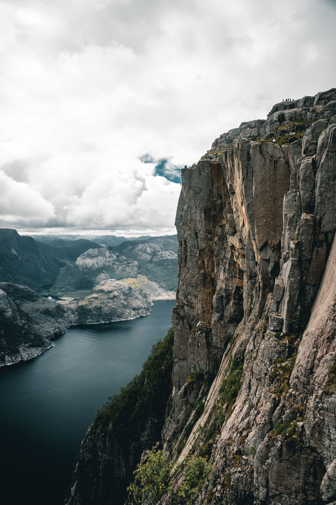
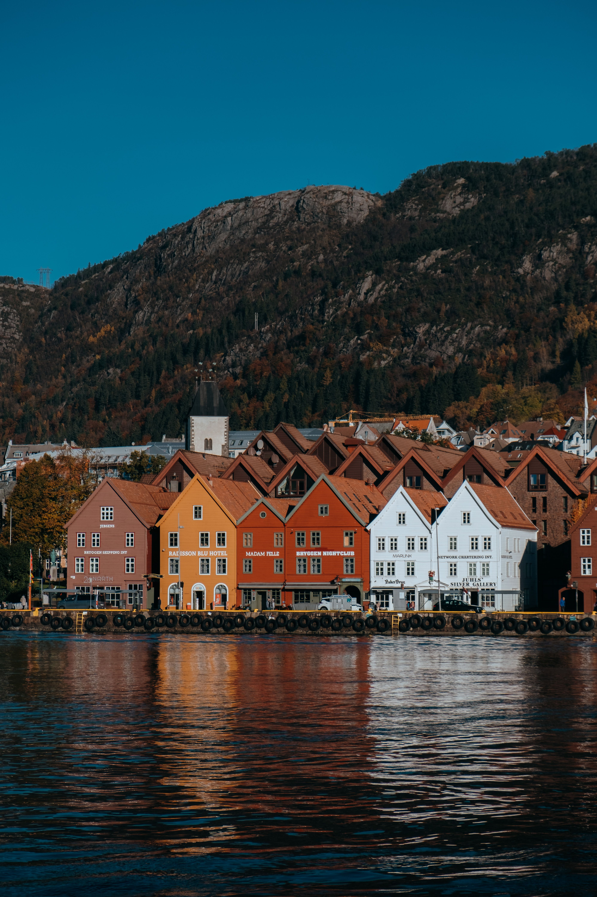

Norway, in Northern Europe, is known for its deep fjords, towering mountains, and long coastline shaped by glaciers. The country has some of the most dramatic landscapes in the world, with famous fjords like Geirangerfjord and Nærøyfjord, both UNESCO World Heritage Sites. In the far north, the Northern Lights create colorful displays in the winter sky, while in summer, the Midnight Sun keeps the Arctic regions bright for weeks.
Norway is one of the best places on Earth to see the Northern Lights, with clear, dark skies and minimal light pollution. The best chances to see the aurora borealis are from September to March in regions like Tromsø, Alta, and the Lofoten Islands, where the lights dance across the Arctic sky in shades of green, purple, and pink.